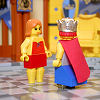

|
|
|
2 Samuel 11
|
 (11:1) "They destroyed the children of Ammon, and besieged Rabbah." (11:1) "They destroyed the children of Ammon, and besieged Rabbah."
God's 81st Killing
Massacre of the Ammonites
|
| 11:1
And it came to pass, after the year was expired, at the time when kings go
forth to battle, that David sent Joab, and his servants with him, and all
Israel; and they destroyed the children of Ammon, and besieged Rabbah. But
David tarried still at Jerusalem.
|
| 11:2
And it came to pass in an eveningtide, that David arose from off his bed,
and walked upon the roof of the
king's house: and from the roof he saw a woman washing herself; and the
woman was very beautiful to look upon.
|
| 11:3
And David sent and enquired after the woman. And one said, Is not this
Bathsheba, the daughter of Eliam, the wife of Uriah the Hittite? |


 (11:2-5) David sees a woman (Bathsheba) bathing and
likes what he sees. So he sends for her and commits adultery with her "for
she was purified from her uncleanness."
(11:2-5) David sees a woman (Bathsheba) bathing and
likes what he sees. So he sends for her and commits adultery with her "for
she was purified from her uncleanness."
(11:2) "David arose ... and from the roof he saw a woman washing herself; and the woman was very beautiful."
(11:4) "David ... took her; and she came in unto him, and he lay with her; for she was purified from her uncleanness."
|
| 11:4
And David sent messengers, and took
her; and she came in unto him, and he lay with her; for she was purified from her
uncleanness: and she returned unto her house.
|
| 11:5
And the woman conceived, and sent and told David, and said, I am with
child.
|
| 11:6
And David sent to Joab, saying, Send me Uriah the Hittite. And Joab sent
Uriah to David.
|
| 11:7
And when Uriah was come unto him, David demanded of him how Joab did, and
how the people did, and how the war prospered. |
David Commits Adultery, Murder
|
| 11:8
And David said to Uriah, Go down to thy house, and wash thy feet. And
Uriah departed out of the king's house, and there followed him a mess of
meat from the king.
|
| 11:9
But Uriah slept at the door of the king's house with all the servants of
his lord, and went not down to his house. |
|
| 11:10
And when they had told David, saying, Uriah went not down unto his house,
David said unto Uriah, Camest thou not from thy journey? why then didst thou
not go down unto thine house? |
|
| 11:11
And Uriah said unto David, The ark, and Israel, and Judah, abide in tents;
and my lord Joab, and the servants of my lord, are encamped in the open
fields; shall I then go into mine house, to eat and to drink, and to lie
with my wife? as thou livest, and as thy soul liveth, I will not do this
thing. |
|
| 11:12
And David said to Uriah, Tarry here to day also, and to morrow I will let
thee depart. So Uriah abode in Jerusalem that day, and the morrow. |
|
| 11:13
And when David had called him, he did eat and drink before him; and he
made him drunk: and at even he went out to lie on his bed with the servants
of his lord, but went not down to his house. |
|
| 11:14
And it came to pass in the morning, that David wrote a letter to Joab, and
sent it by the hand of Uriah. |
|
| 11:15
And he wrote in the letter, saying, Set ye Uriah in the forefront of the hottest
battle, and retire ye from him, that he may be smitten, and die. |
 (11:15-17)
(11:15-17)
"Set ye Uriah in the forefront of the hottest battle,
and retire ye from him, that he may be smitten, and die."
David tells Joab (his captain) to send Bathsheba's husband (Uriah) to "the forefront of the hottest battle ...
that he may be smitten and die." In this way, David gets another wife.
|
| 11:16
And it came to pass, when Joab observed the city, that he assigned Uriah
unto a place where he knew that valiant men were.
|
| 11:17
And the men of the city went out, and fought with Joab: and there fell
some of the people of the servants of David; and Uriah the Hittite died also.
|
| 11:18
Then Joab sent and told David all the things concerning the war; |
|
| 11:19
And charged the messenger, saying, When thou hast made an end of telling
the matters of the war unto the king, |
|
| 11:20
And if so be that the king's wrath arise, and he say unto thee, Wherefore
approached ye so nigh unto the city when ye did fight? knew ye not that they
would shoot from the wall? |
|
| 11:21
Who smote Abimelech the son of Jerubbesheth? did not a woman cast a piece
of a millstone upon him from the wall, that he died in Thebez? why went ye
nigh the wall? then say thou, Thy servant Uriah the Hittite is dead also. |
|
| 11:22
So the messenger went, and came and shewed David all that Joab had sent
him for. |
|
| 11:23
And the messenger said unto David, Surely the men prevailed against us,
and came out unto us into the field, and we were upon them even unto the
entering of the gate. |
|
| 11:24
And the shooters shot from off the wall upon thy servants; and some of the
king's servants be dead, and thy servant Uriah the Hittite is dead also. |
|
| 11:25
Then David said unto the messenger, Thus shalt thou say unto Joab, Let not
this thing displease thee, for the sword devoureth one as well as another:
make thy battle more strong against the city, and overthrow it: and
encourage thou him. |
|
| 11:26
And when the wife of Uriah heard that Uriah her husband was dead, she
mourned for her husband. |
|
| 11:27
And when the mourning
was past, David sent and fetched her to his house, and she became
his wife and bare him a son. But the thing that David had done
displeased the LORD.
|
(11:27) "David sent and fetched her to his house, and she became
his wife and bare him a son."
|
|